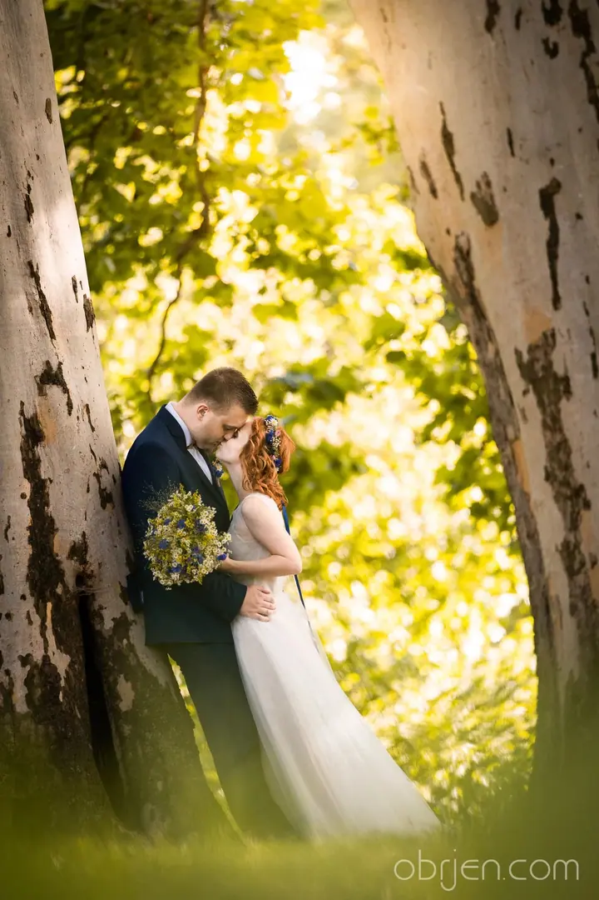
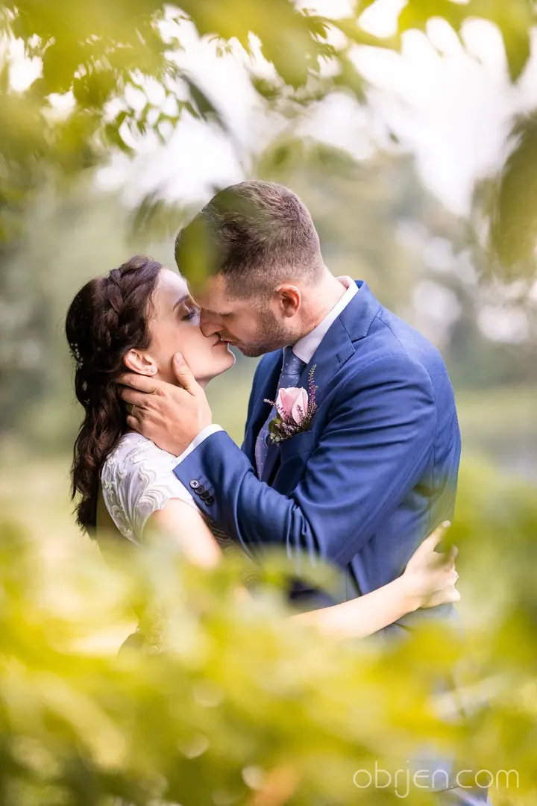
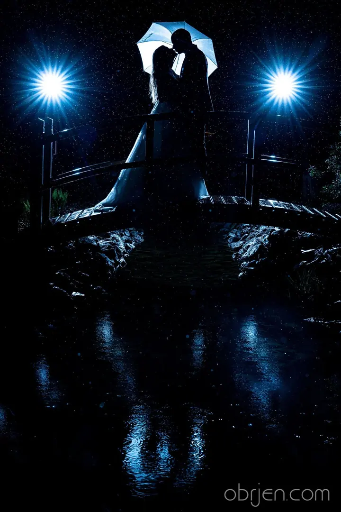
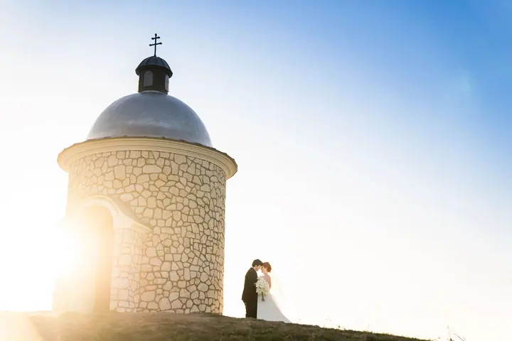

jedna
Svatba od příprav po párty
Fotím celý svatební den od ranních příprav nevěsty přes obřad často až do nočních hodin. Součástí je inscenované focení portrétů na místě, které máte rádi.


Jmenuji se Jan Vašulín, ale klidně mi říkejte Honza. Pod značkou Obrjen fotím v Brně svatby od ranních příprav až po večerní párty, aby vám z vašeho dne nic neuteklo.
Více o mně
Co fotím
jedna
Fotím celý svatební den od ranních příprav nevěsty přes obřad často až do nočních hodin. Součástí je inscenované focení portrétů na místě, které máte rádi.
Všechny vaše fotografie zálohuji v archivu. Když budete chtít fotoknihu nebo tištěné fotky i dlouho po svatbě, rád je dohledám a vyjdu vám vstříc.
Svatba není jen slib a slavnostní oběd.

Za objektivem
Svatba pro mě není jen svatební slib a slavnostní oběd. Opravdu ucelený příběh začíná už ráno přípravami, pokračuje obřadem a počítá i s večerní párty. Proto fotím celý váš den a s ním i atmosféru a všechno dění kolem.
Svatební den by měl být především o vás. Zařídím vše tak, abyste se mohli bavit s rodinou a přáteli a fotografa pustit z hlavy. Přitom budu vždycky nablízku. Na inscenované focení portrétů vyrazíme na místo, které máte rádi, a když se zrovna necítíte jako modelové, navedu vás.
Uvědomuji si, jak důležité svatební fotografie jsou. Fotím rovnou dvěma fotoaparáty, několik objektivů mám v záloze a fotky se ukládají na dvě karty. Nejdůležitější čas nad fotografií ale přichází až u počítače, kde se pečlivě věnuji každému snímku.
Jan
Sejdeme se a popovídáme si o všem, co potřebujete vědět. Ve svatební den tak nebude žádné překvapení, kdo vás fotí.
Fotím od příprav nevěsty přes obřad často až do nočních hodin. Věnujeme se i inscenovaným portrétům na vašem oblíbeném místě.
Z velkého množství snímků vyberu ty nejlepší a každému se pak pečlivě věnuji při úpravách.
Přes 400 upravených fotografií dostanete v elektronické podobě do 21 dní. Všechno zálohuji, takže fotky dohledám i po letech.
Portfolio
Otázky
Výsledkem je přes 400 pečlivě vybraných a upravených fotografií v elektronické podobě, které vám dodám do 21 dní.
Svatby fotím od 16 000 Kč. Přesnou podobu dne a ceny probereme na společné schůzce.
Vůbec ne. Při inscenovaném focení vás navedu, zbytek dne fotím nenápadně a nechávám vás užívat si oslavu.
Fotím rovnou dvěma fotoaparáty, mám v záloze další objektivy a fotky se ukládají na dvě karty zároveň. Technika nás nezradí.
Ano. Všechny fotografie archivuji, takže je dohledám i dlouho po svatbě a rád vám s fotoknihou nebo tiskem pomůžu.